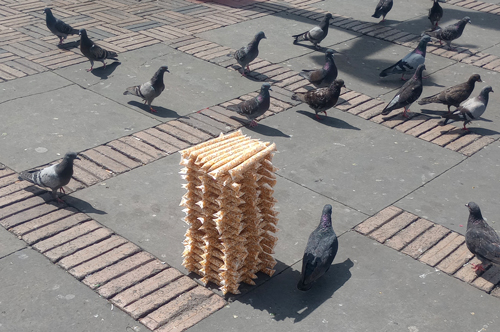
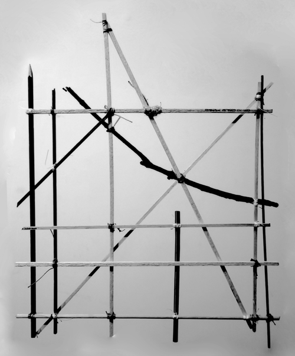
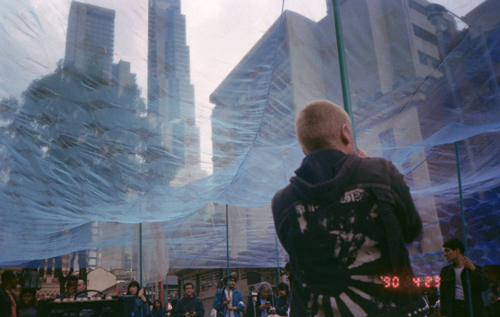
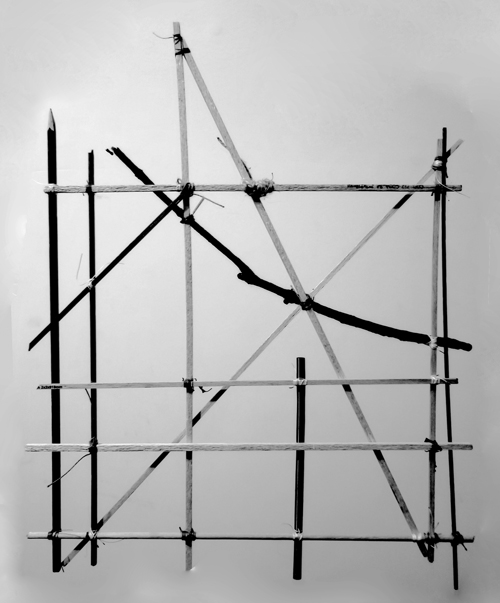
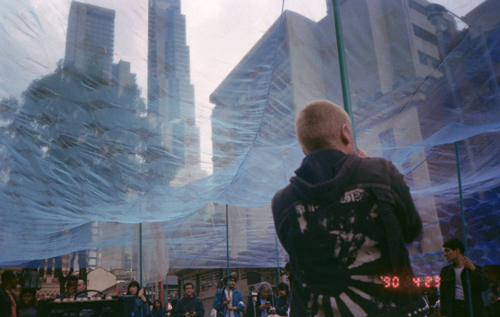
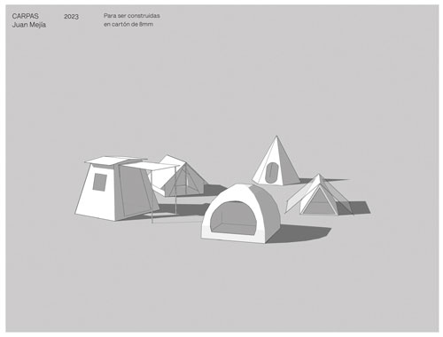
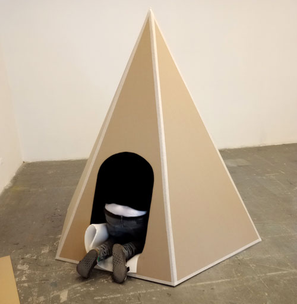
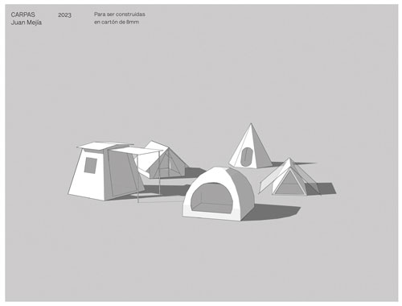
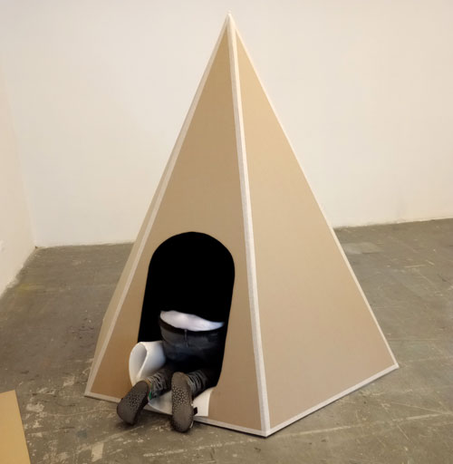

José
Sanín
Canney
Chernoff
saninjose90@gmail.com
www.josesanin.com
+57(1)3006514528
José Sanín Canney. En
Bogotá,
Colombia.
Este sitio compila
proyectos y es una muestra de la práctica de
José que abarca el
arte y el
diseño de cosas.
y es una muestra de la práctica de
José que abarca el
arte y el
diseño de cosas. En esencia
explora
En esencia
explora posibilidades para unir un
palo a
otro, o un
palo con
algo más, y las relaciones que surgen en el
proceso. Ligado a esto hay un interés por los
formatos en los que se
registra y
pone en escena aquello que se produce:
Lo editorial.
posibilidades para unir un
palo a
otro, o un
palo con
algo más, y las relaciones que surgen en el
proceso. Ligado a esto hay un interés por los
formatos en los que se
registra y
pone en escena aquello que se produce:
Lo editorial.
Superficies de apoyo,
bancos ,
bancas,
muebles,
objetos,
impresos y
estructuras para exhibir
cosas,
documentos,
personas y
situaciones. También está la posibilidad de trabajar en
proyectos comisionados y
colaboraciones. Servicios en
dirección de arte,
producción y
diseño intuitivo para
objetos,
artes y
espacios compartidos.
,
bancas,
muebles,
objetos,
impresos y
estructuras para exhibir
cosas,
documentos,
personas y
situaciones. También está la posibilidad de trabajar en
proyectos comisionados y
colaboraciones. Servicios en
dirección de arte,
producción y
diseño intuitivo para
objetos,
artes y
espacios compartidos.
BIO/CV
Índice de proyectos
José Sanín Canney. In
Bogotá,
Colombia.
This site gathers
projects done by
José and is a showcase of his practice which works around
art and the
assembly of things. Essentially his practice
explores ways in which a
stick can be attached to
another, or a
stick to
something else, and everything that comes up in the
process. There is also an interest in the way these things are
registered and
staged:
The editorial aspect in all of this.
Support structures,
benches,
stools,
furniture,
objects,
prints and
surfaces to exhibit
things,
documents,
people and
situations.
Commissioned projects and
collaborations are also in order. Services in
artistic direction,
production and
intuitive design for
objects,
graphic arts and
shared spaces.
BIO/CV
Project index